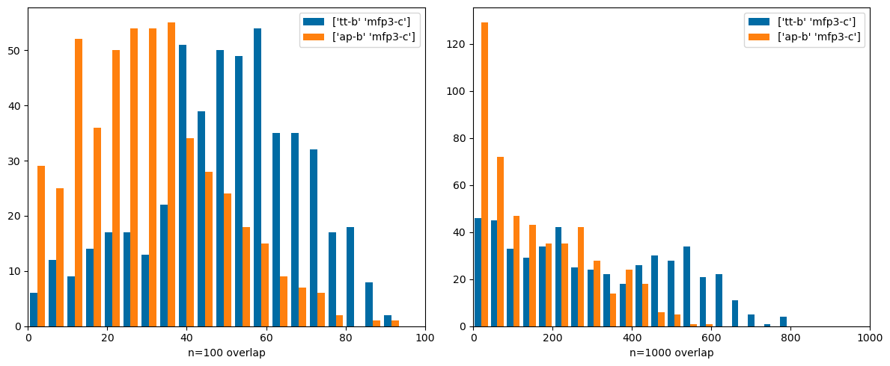

This post is a followup to a recent one exploring the amount of overlap in the hit sets returned by doing similarity searches with different fingerprint types.
At the end of the intro to that post I said:
One thing that is worth keeping in mind is that these results almost certainly consider similarity values which are down close to and probably in the region of similarities observed between random compounds. It may be worth refining the analysis in order to only consider similarities which are more significant, but that’s for a possible future post.
This is that “possible future post”. Here I filter the hit sets to only include similarity values greater than or equal to the 99% threshold for each fingerprint in the post on random similarities.
Other than skipping the initial examination of searches done with a single compounds, the rest of the analysis is the same as in earlier post. The results are not qualitatively different, but I think this is a more sensible approach overall.
from rdkit import Chemfrom rdkit.Chem import rdFingerprintGeneratorfrom rdkit.Chem import Drawfrom rdkit.Chem.Draw import IPythonConsolefrom rdkit import DataStructsimport numpy as npfrom matplotlib import pyplot as pltplt.style.use('tableau-colorblind10')%matplotlib inline%load_ext sqlimport rdkitprint(rdkit.__version__)
2025.03.1
import gzipwith gzip.open('../data/Pubchem_AID373_compounds.sdf.gz','rb') as inf:with Chem.ForwardSDMolSupplier(inf) as suppl: dbmols = [x for x in suppl if x isnotNone]len(dbmols)
59788
Define the fingerprints and similarity thresholds we will use:
from rdkit.Chem.Pharm2D import Gobbi_Pharm2D,Generatedef Gobbi2D_bits(mol,fpLen=2048): res = DataStructs.ExplicitBitVect(fpLen)for bit in Generate.Gen2DFingerprint(mol,Gobbi_Pharm2D.factory).GetOnBits():# the bits are not hashed, so we need to do so before we fold them: res.SetBit(hash((bit,))%fpLen)return res
In order to get some decent statistics, we will do similarity searches with 500 random molecules.
Running this cell takes a while.
import randomrandom.seed(0xbad5eed)order =list(range(len(dbmols)))random.shuffle(order)nToDo =500order = order[:500]accum = {}for nm,fpg,cthresh,bthresh in runs:print(nm) fps =list(fpg.GetFingerprints(dbmols,numThreads=8)) taccum = []for i in order: qry = fps[i] sims = [(sim,j) for j,sim inenumerate(DataStructs.BulkTanimotoSimilarity(qry,fps)) if sim>=bthresh and j!=i] sims =sorted(sims,reverse=True)[:1000] taccum.append(sims) accum[f'{nm}-b'] = taccum fps =list(fpg.GetCountFingerprints(dbmols,numThreads=8)) taccum = []for i in order: qry = fps[i] sims = [(sim,j) for j,sim inenumerate(DataStructs.BulkTanimotoSimilarity(qry,fps)) if sim>=cthresh and j!=i] sims =sorted(sims,reverse=True)[:1000] taccum.append(sims) accum[f'{nm}-c'] = taccumfor nm,func,thresh in func_runs:print(nm) fps = [func(m) for m in dbmols] taccum = []for i in order: qry = fps[i] sims = [(sim,j) for j,sim inenumerate(DataStructs.BulkTanimotoSimilarity(qry,fps)) if sim>=thresh and j!=i] sims =sorted(sims,reverse=True)[:1000] taccum.append(sims) accum[nm] = taccum
Comparing very different types of fingerprints: count-based Morgan3 and both Topological Torsions and Atom Pairs (these both use count simulation. Here there are significant differences. These are fingerprints that it would be interesting to use together.
compare((('tt-b','mfp3-c'),('ap-b','mfp3-c')))

Same thing with bit-baseed Morgan3 and RDK5. Again, These are nicely complementary fingerprints:
Finally compare Morgan3 with the pattern fingerprint (normally used for substructure screening, not similarity search), Gobbi2D (a 2D pharmacophore FP) and the Avalon FP. These are also nicely different from each other: